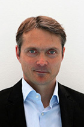
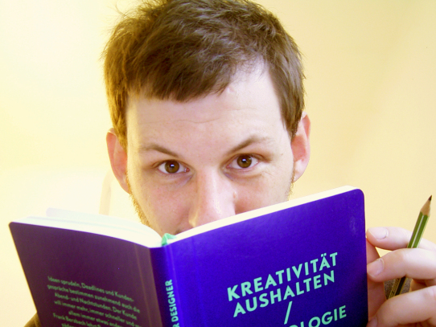

Referenten der Buchtage 2014
Dr. Hans-Hermann Albers
Dr. Hans-Hermann Albers, geb. 1976 ist Architekt, Stadtforscher und Berater. Nach seinem Studium Architektur & Städtebau an der TU Graz folgten Forschungsarbeiten, Kunstprojekte und Ausstellungsbeiträge zu Stadtentwicklungsprozessen mit Schwerpunkten CSR und Nachhaltigkeit in der Stadtentwicklung. Seine Dissertation schrieb er zum Thema "Corporate Urban Responsibility". Seit 2011 betreibt er das Architekturbüro albers architektur in Berlin und ist stellvertretender Vorstandsvorsitzende von Urbanophil-netzwerk für urbane kultur.
Dr. Johannes Berentzen
Dr. Johannes B. Berentzen, geb. 1979 hat Betriebswirtschaftslehre an der Universität Münster mit den Schwerpunkten Marketing, Controlling sowie Distribution & Handel studiert. In seiner Promotion am Marketing Centrum Münster beschäftigte sich Dr. Berentzen mit dem Management von Handelsmarken. Seit 2010 ist er bei Wieselhuber & Partner im Team Konsumgüter und Handel und berät Hersteller und Händler vor allem in den Bereichen Strategie, Marketing, Vertrieb und Controlling.
Zoë Beck
Zoë Beck ist Verlegerin bei CulturBooks und arbeitet außerdem als Autorin und Übersetzerin. Seit 2013 hat sie eine Kolumne in der Sendung LiteraturEN bei SWR2, und sie schreibt für das Onlinefeuilleton culturmag.de.
Christian Beinke
Co-Founder, Dark Horse
Christian ist studierter Maschinenbau-Ingenieur, seine Leidenschaft für Methoden und nicht für Motoren hat Ihn jedoch schon im Studium in eine andere Richtung getrieben und über so seltsame Dinge wie den Einfluss des Schätzens beim Konstruieren und Gestalten nachdenken lassen.
Nach dem »Design Thinking« Studium am Hasso-Plattner-Institut, gründete er mit 30 Partnern die Agentur »Dark Horse«. Dark Horse hilft Unternehmen nicht nur in Co-Creation neue Produkte und Dienstleistungen zu entwickeln, neue Methoden einzuführen, sondern auch die Arbeitskultur zu verändern. Dark Horse sieht sich dabei selber als Vorreiter einer neuen Unternehmenskultur und Experimentierfeld für post-hierarchisches Management.
Anett Gläsel-Maslov
Anett Gläsel-Maslov ist seit März 2013 bei Metaio, Anbieter von Augmented Reality Software & Lösungen, Manager für PR & Social Media in der EMEA Region. Sie studierte Journalistik, Germanistik und Anglistik an der Universität Leipzig und hat praktische Erfahrungen im Bereich Public Relations, Social Media & Community Management sowie im Event- und Projektmanagement (auch in der Buchbranche).
Karin Hartmeyer

Karin Hartmeyer, geb. 1986, studierte Vergleichende Literaturwissenschaft in Wien und Aix-en-Provence. Sie arbeitete im Buchhandel und 3 Jahre als Presseverantwortliche im Passagen Verlag (Wien). Als Mitgründerin der Reizpartie, initiierte sie diverse Projekte zur Nachwuchsförderung in der österreichischen Buchbranche. Aktuell ist sie für die Presse- und Öffentlichkeitsarbeit des Vereins Deutsche Fachpresse in Frankfurt verantwortlich. Zudem begleitet sie seit zwei Jahren die Projekte des Forum Zukunft im Börsenverein des Deutschen Buchhandels.
Moritz Hodde
Moritz Hodde ist geschäftsführender Gesellschafter der Firmen NEWBOOKS Services und NEWBOOKS Solutions GmbH. Er unterstützt Verlage und Buchhandlungen mit Metadaten- und Softwarelösungen und trägt zur Optimierung von Geschäftsprozessen in der gesamten Branche bei. Zudem begleitet er führende Medienunternehmen beim methodisch richtigen Einsatz qualifizierter Katalogdaten und zugehöriger IT-Systeme. NEWBOOKS Solutions ist zertifizierter Partner der MVB in den Bereichen Branchensoftware und Metadatendatenqualität.
Katharina Hesse
Katharina Hesse, Geschäftsführerin der Stiftung
Buchkunst.
Seit 1998 arbeitet Katharina Hesse mit dem „schönsten“
Produkt der Welt. Ob als Buchhändlerin, als Organisationsleiterin am mediacampus
frankfurt oder zuletzt als Geschäftsführerin des reinen eBook verlegenden
e-Lectra Verlags – Seit November 2013 verantwortet sie die Aufgabe der Geschäftsführung der
Stiftung Buchkunst Frankfurt am Main und Leipzig, deren Ziel es ist, das schöne Buch zu fördern.
Fabian Kern
Fabian Kern ist seit 2012 selbständiger Berarter für digitale Publikationsprozesse. Zuvorin der Haufe Gruppe tätig als Teamleiter im Bereich Produktion von Online-Datenbanken und als Projektleiter für die Entwicklung und Einführung SGML-basierter Buchproduktion für Print und eBook.
Dominik Kenzler
Co-Founder, Dark Horse
Dominik Kenzler studierte Kommunikationsdesign an der
Hochschule Wismar, sowie Interface- & Interactiondesign an der FH Potsdam.
Als
Designer bei Eden Design in Amsterdam (heute edenspiekermann) sowie Plex Group war er
für zahlreiche große Kunden und Designprojekte verantwortlich. Über das
Männermagazin FHM kam er im Frühjahr 2011 zum deutschen Musikmagazin »Juice«,
wo er die Stelle des verantwortlichen Art Directors des übernommen hat.
Nach dem
»Design Thinking« Studium am Hasso-Plattner-Institut, gründete er mit 30
Partnern die Agentur »Dark Horse«, welche sich mit Innovationsberatung, Service Design
und Cultural-Change beschäftigt, zu den Kunden und Projektpartnern gehören
beispielsweise Audi, Deutsche Bahn, DHL, Otto & SAP.
Als User Experience Designer, Coach und Innovationsberater, lebt und arbeitet Dominik heute in Berlin.
Jochen Krisch
Jochen Krisch ist Betreiber des Branchenblogs Exciting Commerce und einer der profiliertesten Experten für neue Geschäftsmodelle im Online-Handel. Er ist seit 2001 als unabhängiger Branchenanalyst und Strategie-Berater tätig und veranstaltet u.a. die K5 Konferenz für den Online-Handel. Nach dem Informatikstudium an der Universität Erlangen hat er von 1995 bis 2001 beim Shoppingsender HSE24 die Bereiche Planung & Analyse mitaufgebaut und zuletzt geleitet. Als Autor verfasste Jochen Krisch unter anderem das Trenddossier "Social Commerce - Verkaufen im Community-Zeitalter" für das Zukunftsinstitut und "E-Commerce für Fortgeschrittene - 50 Denkanstöße für den Online-Handel von morgen"
Ulrike Müller

ULRIKE MÜLLER & PARTNER, Unternehmensentwicklung für Kreative, Berlin
UlrikeMüller
ist als Unternehmensentwicklerin und Managementberaterin auf Verlage und Unternehmen der Medienwirtschaft
spezialisiert. Als akkreditierte Fachberaterin in den Förderprogrammen Coaching
Bonus und Unternehmenswert
Mensch begleitet sie etablierte Unternehmen und Start-ups in der Branche dabei, die Chancen der
Digitalisierung aktiv zu nutzen. Sie hat langjährige internationale Managementerfahrung in einem
Musikverlag.
Jan Orthey
Geboren 1979 in Bremen, Studium der internationalen Wirtschaft an der Uni Göttingen, Handelsfachwirt IHK. Inhaber von Lünebuch - Buchhandlung am Markt, Gründungsmitglied und Schatzmeister des Vereins Buy Local e.V., seit 2012 stellvertretender Vorsitzender des SoA
Alexander Oelling

Alexander Oelling is a founder and manager of the Sensorberg
GmbH. After his mathematics study he was between 2005 and 2011 one of the founders and managers of a
software technology enterprise which developed worldwide the first „NoSQL/BigData“-data
bank systems. As a part of the 2-headed team Alexander Oelling founded sensorberg in September 2013.
Sensorberg use one, from Apple developed and brand-juridically protected, new iBeacon technology to send,
based on the Bluetooth standard 4.0, personalised news to customer in stationary trade.
Sensorberg would like to configure with his unique iBeacon Management Platform the worldwide biggest pool of
iBeacon, administer and put for use cases as well as capitalisation models of enterprise at possession.
To reach to this aim Sensorberg sets to itself the tasks to develop the best crosses Platform Solution
and to provide systems closed like open iBeacon management Systems. „
Amr Osman

Amr Osman ist geschäftsführender Gesellschafter der NEWBOOKS Solutions GmbH. Nach seiner Ausbildung zum Ingenieur und Geophysiker arbeitete er 15 Jahre lang als IT-Leiter der Verlagsgruppe Dr. Otto Schmidt. Zudem übernahm er die Leitung strategisches IT-Management der Sack Mediengruppe und war zuletzt Geschäftsführer derselben. Seit dem vergangenen Jahr berät er Verlage und Buchhandlungen im Bereich Prozessoptimierung und IT-Strategie. NEWBOOKS Solutions ist zertifizierter Partner der MVB in den Bereichen Branchensoftware und Metadatendatenqualität.
Nicolas Perrot
Nicolas Perrot ist seit 13 Jahren in verschiedenen Positionen bei Lufthansa
tätig, davon in den letzten 7 Jahren im Bordproduktmanagement der Lufthansa Passage.
Gerrit Pohl

Gerrit Pohl hat ein Studium zum Diplom-Kaufmann mit Schwerpunkt Wirtschaftsinformatik und Recht in Freiberg absolviert, von 2004 - 2007 als Forscher am Fachgebiet Information Systems an der Technischen Universität Darmstadt zum Thema "Digitalisierungsprozesse in der Medienindustrie" tätig. 2001 - 2011 Digital Native beim Axel Springer Mediahouse, zuletzt als Gesamtleiter Digitale Medien. 2011 – 2013 stellvertretender Geschäftsleiter des Gruner+Jahr Digital Center in Hamburg. Seit Juli 2013 als Senior Evangelist bei Microsoft Deutschland insbesondere für Kooperationen in der Publishing- und Entertainmentindustrie verantwortlich. Verfasser zahlreicher wissenschaftlicher Schriften sowie ehemaliger Autor für unter anderem Rolling Stone, Spiegel Online, FAZ und Titanic.
Bernd Röder
Bernd Roder ist Gründer, Gesellschafter und Vorstand der MChoice AG. Er ist Diplom-Wirtschafts-Ingenieur und hat rund 20 Jahre Berufserfahrung im Bereich Business Process Engineering. Nach internationaler Tätigkeit in einem deutschen Konzern entschied er sich 1998 zur Gründung eines eigenen Unternehmens für ERP-System Implementierung. Vor einem Jahr folgte dann die Gründung der MChoice AG, die die Smartphone App LChoice entwickelt und vermarktet.
Dr. Jens Rothenstein

Dr. Jens Rothenstein ist seit Mai 2013 Projektmanager an der IFH Institut für Handelsforschung GmbH und dem dort angesiedelten ECC Köln. Aus vorhergehenden beruflichen Stationen sowie seiner Promotion bringt er Erfahrungen in den Bereichen Online-Marketing, Konsumentenverhalten und Marktforschung mit. Herr Dr. Rothenstein beschäftigt sich am ECC Köln schwerpunktmäßig mit den Bereichen B2B, Consumer Electronics & Elektro, Webanalyse, Online-Marketing sowie Zielgruppen- & Konsumentenverhalten.
Prof. Dr. Okke Schlüter
Dr. Okke Schlüter ist Professor für Medienkonvergenz im Studiengang Mediapublishing an der Hochschule der Medien in Stuttgart (HdM). Schwerpunkte in Lehre und Forschung sind neben der Medienkonvergenz Crossmediales Produktmanagement und digitale Geschäftsmodelle. Nach der Promotion und Stippvisiten bei BCG und McKinsey war Okke Schlüter Trainee für Führungskräftenachwuchs bei der Ernst Klett AG, es folgten Führungspositionen in verschiedenen Geschäftsbereichen der Klett-Gruppe. Außerhalb der HdM begleitet er die Innovationsinitiative protoTYPE des Börsenvereins des deutschen Buchhandels als einer der Experten.
Tobias Schmid

Tobias Schmid: Leiter E-Commerce, Osiandersche Buchhandlung GmbH;
1985 – 1987 Ausbildung zum Buchhändler bei OSIANDER, dann Studium der Philosophie und Ethnologie. Seit 1997 in unterschiedlichen Positionen in Verlag, Zwischenbuchhandel und Buchhandel beschäftigt. Ab 2008 wieder bei OSIANDER - verantwortet die digitalen Verkaufskanäle und den Bereich E-Reading. Sprecher des AK ECom / Arbeitskreis E-Books und E-Commerce im Buchhandel
Fabian Thomas
Fabian Thomas studierte deutsche und amerikanische Literaturgeschichte in Bonn und München. Von 2010 bis 2012 projektverantwortlich bei TUBUK, einer Plattform für unabhängige Verlage im Netz. Arbeitet als freier Redakteur und Blogger in den Bereichen Kultur und Literatur in Berlin. Herausgeber von The Daily Frown, dem Magazin für Musik Literatur Alltag, 2013 Mitgründer des Digitalverlags shelff, 2014 Mitorganisator der Electric Book Fair, der deutschlandweit ersten E-Book-Messe.
Alexander Walther
Alexander Walther ist Geschäftsführer der SoftLevel Communication GmbH, eines Tochterunternehmens der SoftLevel GmbH, welche seit 2005 die BONUS Warenwirtschaft für Buchhandlungen entwickelt und gemeinsam mit Umbreit vertreibt. Mit seiner Frau betreibt er das 1992 gegründeten Familienunternehmen BÜCHER-WALTHER mit mehreren Buchhandlungen im Erzgebirge.
Dr. Victor Wang
Dr. Victor Wang beschäftigt sich seit über 15 Jahren mit dem medienneutralen Publizieren und mit der Konzeption elektronischer Produkte. Er hat in verschiedenen Fachverlagen die technischen Abteilungen Electronic Publishing bzw. XML-Vorstufe geleitet. Seit 2011 führt er die Abteilung Content- und Printmedia bei der Verlagsgruppe Hüthig-Jehle-Rehm in Heidelberg. Schwerpunkt seiner Tätigkeit sind Prozessoptimierungen im Zuge der Umstellung auf XML-Produktionsprozesse. Im Zuge dessen war er auch an Konzeption und Entwicklung einer XML-basierten Pflegeoberfläche für Autoren beteiligt. Daneben befasst er sich mit allen modernen elektronischen Publikationsformen, von ihm stammt unter anderem der Buchtitel „E-Books mit EPUB“.
Leander Wattig
Leander Wattig ist Blogger und trägt mit Projekten wie
»Ich mach was mit Büchern«, dem »Virenschleuder-Preis« und der deutschlandweiten
Stammtisch-Reihe »Pub 'n' Pub« zur stärkeren Vernetzung der Publishing-Branche bei. Zudem
unterstützt er führende Medienunternehmen und Kreativschaffende als freier Berater beim Social
Media Marketing und engagiert sich als Vorstandsmitglied der Theodor Fontane Gesellschaft.
Felix Weihnacht
Felix Weihnacht ist Gesellschafter und Verantwortlicher für den Bereich Kreation bei der SoftLevel Communication GmbH und Leiter der Niederlassung am Standort Frankfurt am Main. Als Mitinhaber und Gründer der Kommunikationsagentur hanfweihnacht verfügt er über langjährige Erfahrungen rund um die Themen E- und M-Commerce sowie „klassische“ Kommunikationsmaßnahmen für Buchhandel, Verlage und andere Branchen.